Simple and Easy Recipes
Chicken Chaap
© 2016 Spicy World, Published on: Jan 7, 2016
One of the most famous dish from Mughlai cuisine is 'Chicken Chaap' and the taste is unbeatable. You will find the actual taste and flavour in few restaurants in Kolkata. After researching for a long time on the authentic recipe of Chicken chaap, here is the way how I made it. This recipe will give you the exact flavour of restaurant style Chaap. This dish should not be eaten as regular meal. It has a rich and thick gravy, goes best with pulao, biriyani, naan or roti. Try not to avoid any ingredient from the list otherwise you will not achieve the real taste.

Ingredients
- 2 big chicken legs.
- half cup of hung curd / yogurt.
- 5 Tablespoons of onion paste.
- 3 Tablespoons of poppy seeds.
- 10-15 cashews.
- 1 Teaspoon of ginger and garlic paste.
- Spice powder (half Teaspoon turmeric powder, 1 Teaspoon red chili powder, 1 Teaspoon roasted coriander powder, 2 Teaspoon garam masala, half Teaspoon mace powder and half Teaspoon nutmeg powder).
- 1 Teaspoon of condensed milk / mawa (khoya kheer).
- half Teaspoon of kewra / rose water.
- Whole spices (2 bay leaves, 4 cloves, 4 green cardamoms, 6 black peppercorns, 1 small cinnamon stick, pinch of cumin seeds).
- 1 Teaspoon of dalda (hydrogenated vegetable oil). [optional]
- 2 Teaspoons of ghee.
- 2 Tablespoons of white oil.
- Salt.
- Warm water.

Steps
Dry roast the poppy seeds and cashews in a pan for 6-7 minutes. Keep aside and let it cool.
Now grind the roasted poppy seeds and cashews with little water or milk.
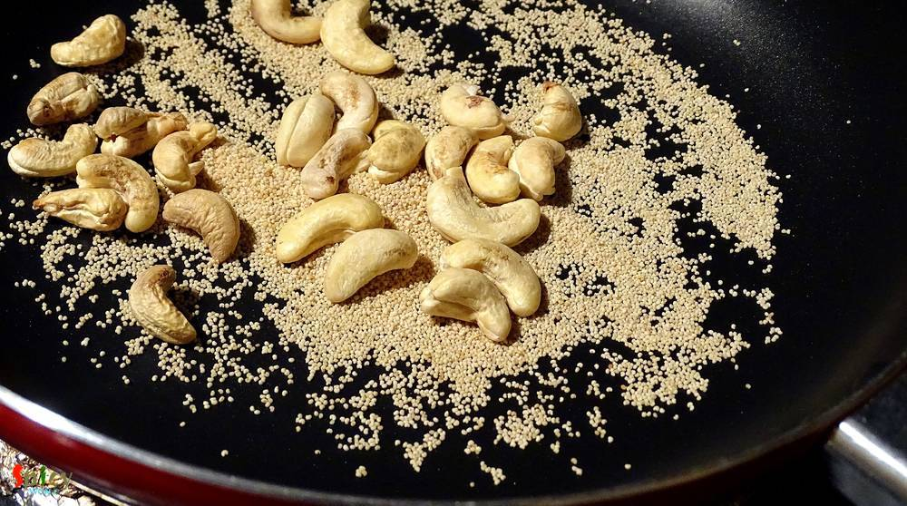Take a big bowl. Add curd, the cashew paste, onion paste, ginger and garlic paste, 1 Teaspoon ghee, 1 Teaspoon kewra water and salt. Mix this.
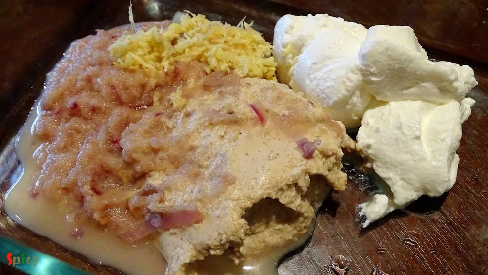Add all the above mentioned spice powder. Mix everything very well.
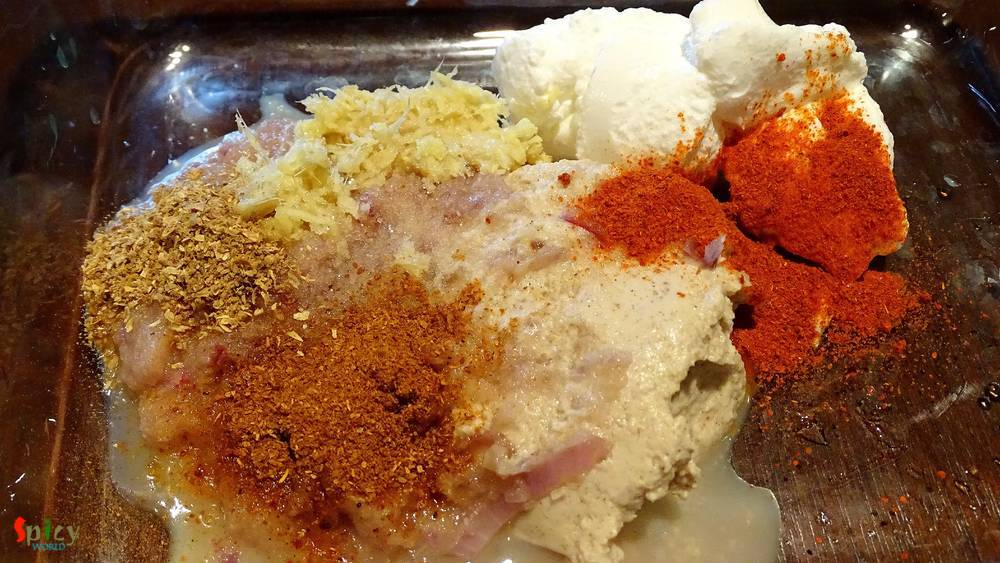Wash chicken legs completely and pat dry. Make flew slits on them.
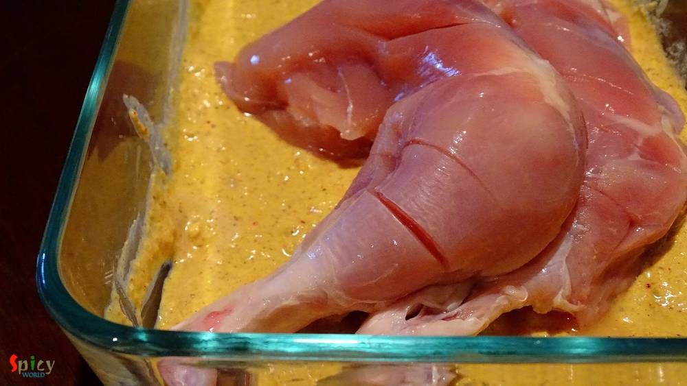Massage the chicken legs with the marination very well and then keep it in the refrigarator for atleast 5 hours or overnight.
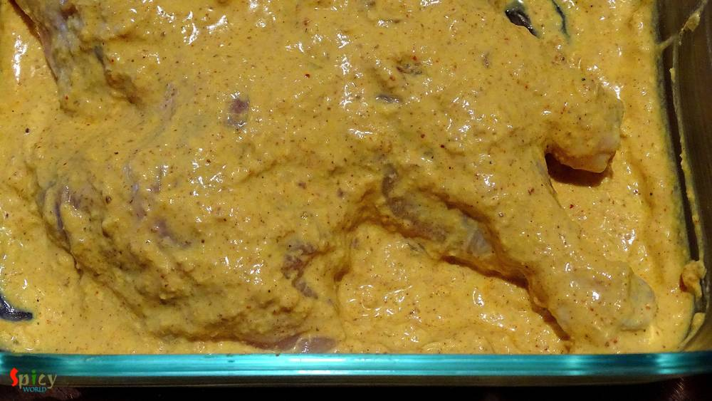If you do not have mawa in your kitchen, do not panic. Just take 4 Tablespoons of condensed milk, 3 Teaspoons of milk powder and 5 Teaspoons of butter. Mix this well and put it in the microwave for 40 seconds. Let it cool down and then you will get mawa.
Now heat dalda (optional), ghee and white oil one by one in a big pan.
Add all the whole spices.
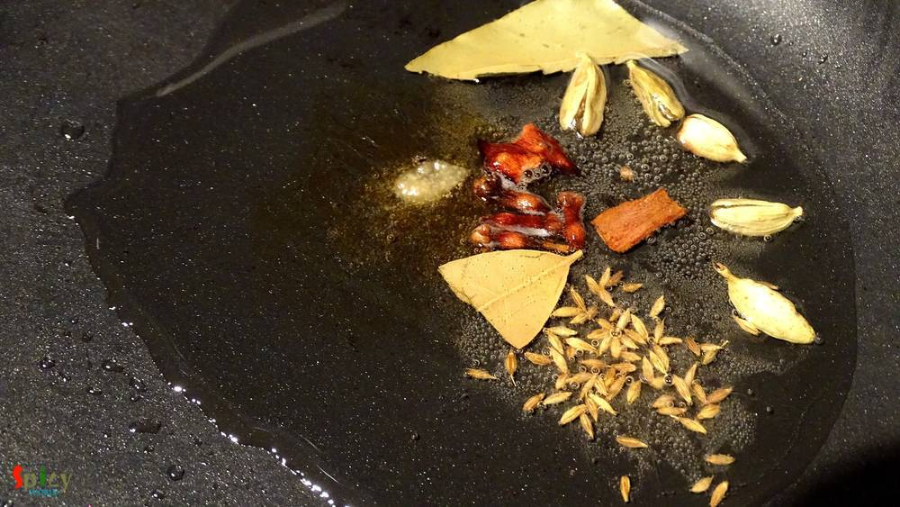Then shake off the extra marination from chicken legs and place those in hot oil. Fry each side for 4-5 minutes.
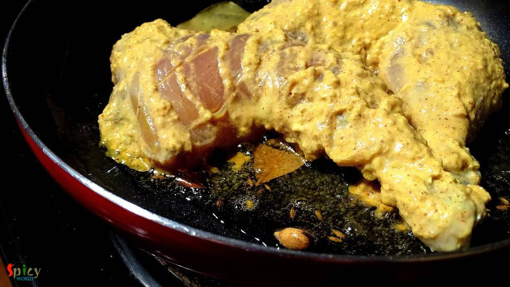When it will become nice golden color, add all of the marination and salt in the pan. Mix this with chicken very well.
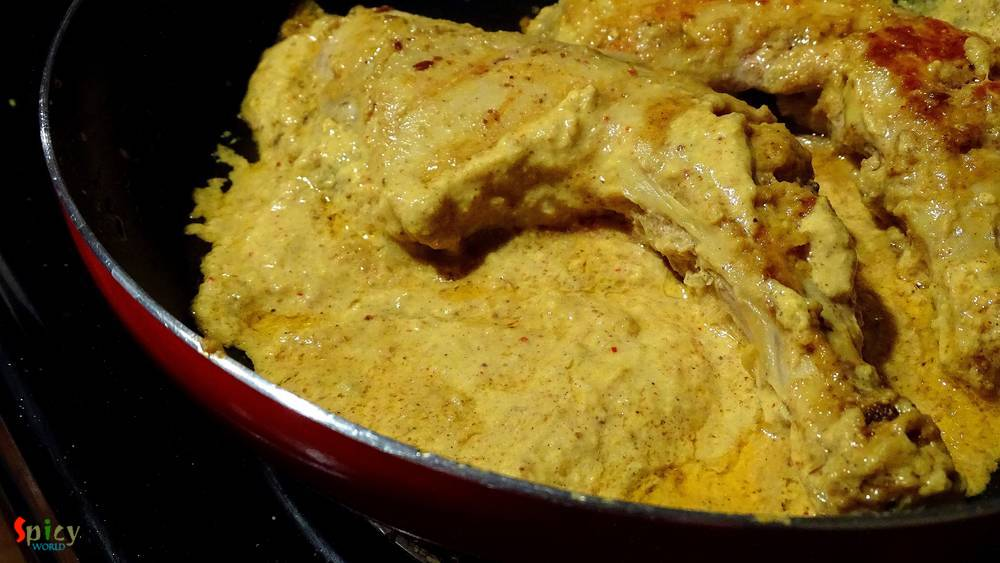The oil should float over the marination. Cook this for 15 minutes in medium flame. Change the sides in between.
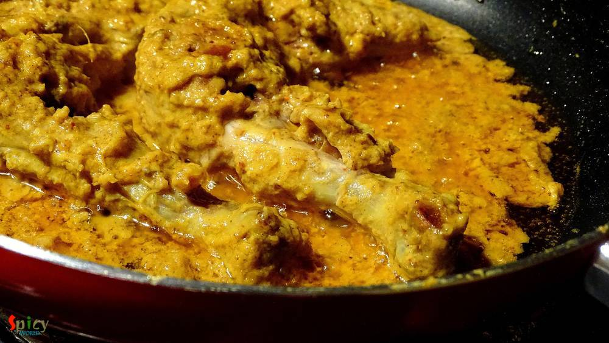After that add half cup of warm water, mix it and cook in slow flame for 25 minutes.
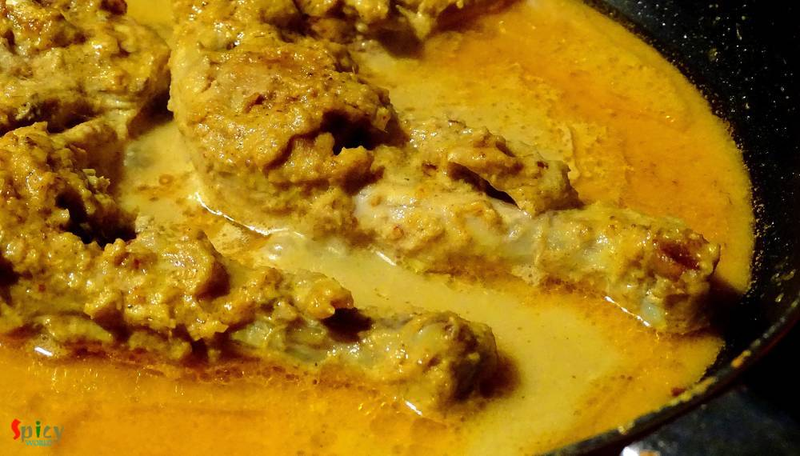When the chicken will become tendor then add the condensed milk / mawa in the gravy. It will make the gravy rich and thick. Cook it for another 3 minutes and turn off the heat.
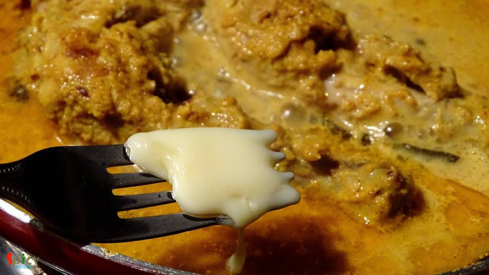Let it rest for 3 minutes then serve.
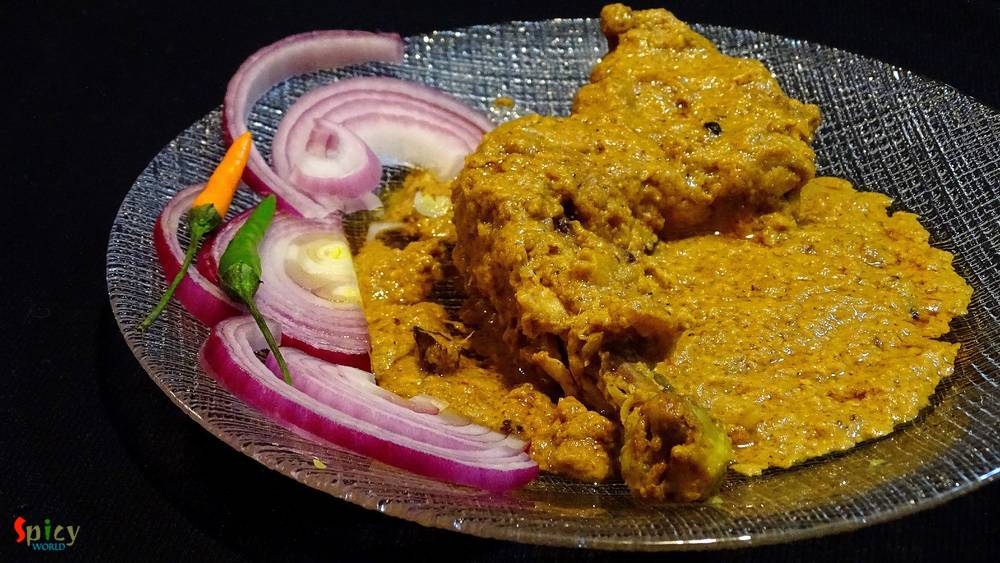Your Chicken chaap is ready ..
Enjoy this hot with naan, biriyani, pulao or roti ...
")